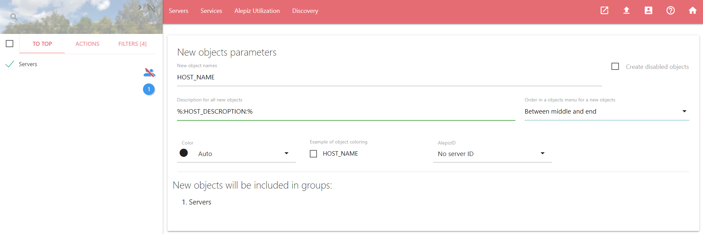
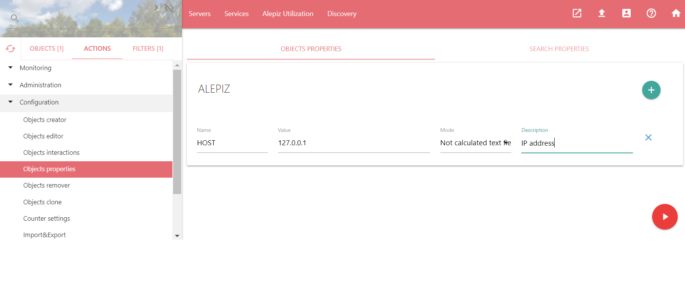
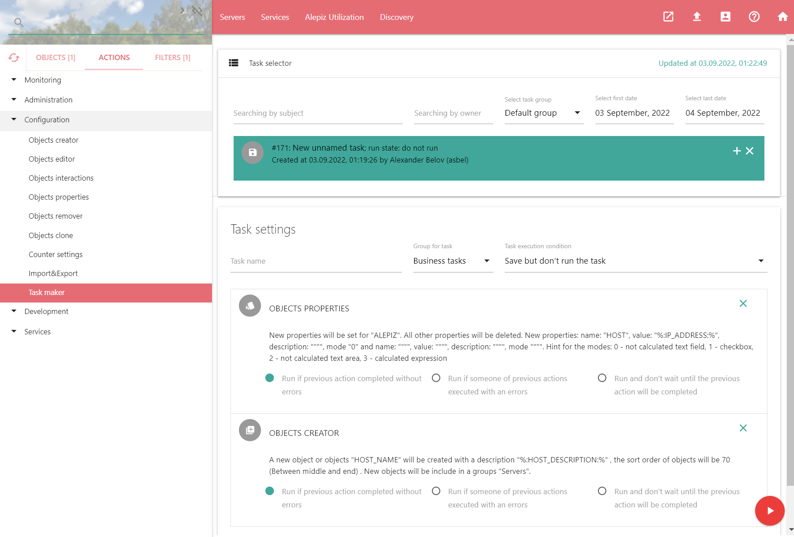
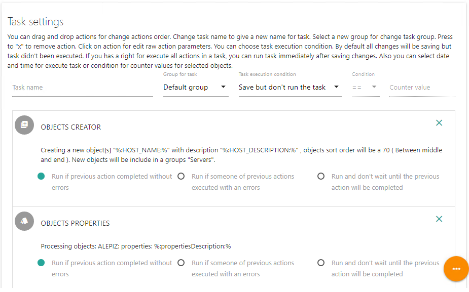
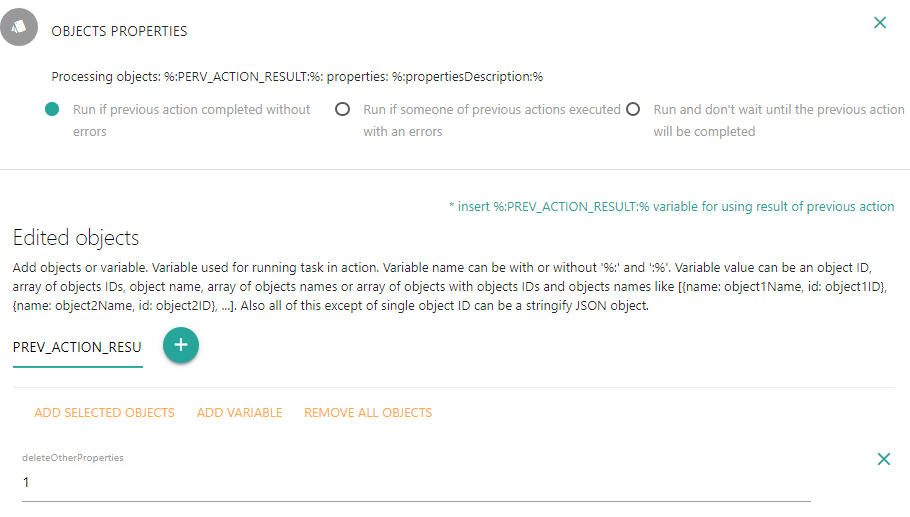
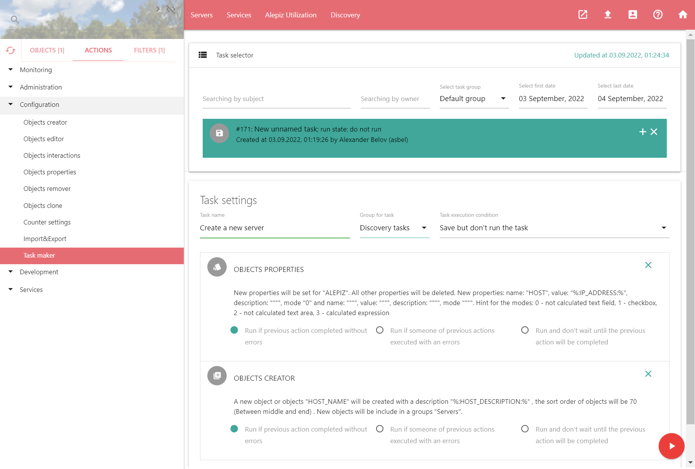
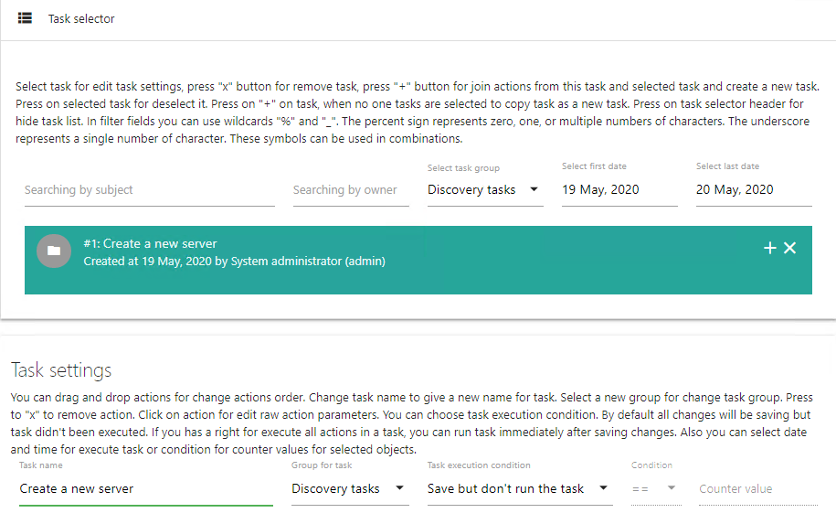

Добавление действий в задачу
Попробуем сделать задачу, которая будет создавать новый объект - новый хост и добавлять ему в качестве свойства - имя хоста. Задачи в дальнейшем можно будет использовать для автоматизации обнаружения хостов в сети. Для этого необходимо заполнить параметры действия Configuration\Objects creator как на скриншоте и нажать на кнопку сохранения действия playlist_add
В качестве параметров в действии будем использовать переменные, которые определим при формировании счетчиков, для обнаружения хостов в сети
Далее выбираем действие Configuration\Objects properties, заполняем его параметры и нажимаем на кнопку сохранения действия playlist_add
Некоторые параметры действий в процессе их сохранения невозможно установить так, чтобы они подходили для выполнения задачи. Но их можно будет исправить в процессе редактирования задачи. В нашем примере это параметр из элемента Object list: ALEPIZ. Вместо него должен быть результат выполнения предыдущего действия Objects creator: идентификатор созданного объекта.
Редактирование задачи
Открываем действие Configuration\Task Maker и видим действия, которые мы добавили в новую безымянную задачу:
Перетаскиваем мышкой задачи, чтобы расположить их в правильной последовательности: сначала создание объекта, затем добавление свойства объекту:
Редактируем действие Object Properties и заменяем объект ALEPIZ на системную переменную %:PREV_ACTION_RESULT:%, значение которой будет равно идентификатору объекта, созданного предыдущим действием Objects creator. Для этого необходимо нажать на действие Object properties. Откроется форма редактирования параметров действия. Далее в поле Edited objects необходимо нажать на REMOVE ALL OBJECTS и удалить объект ALEPIZ. Посте этого нажать на ADD VARIABLE, ввести имя переменной PREV_ACTION_RESULT и нажать на кнопку "+"
Заполняем Task name - "Create a new server", выбираем Group to task - "Discovery tasks" (если нужной группы не существует, можно создать ее с помощью действия Configuration\Tasks groups editor) и нажимаем на кнопку запуска действия (красного цвета), для того, чтобы сохранить изменения:
Задача пропадет из списка, потому что выбрана группа Default group. Используя Select task group, выбираем группу Discovery tasks и видим созданную нами задачу:
